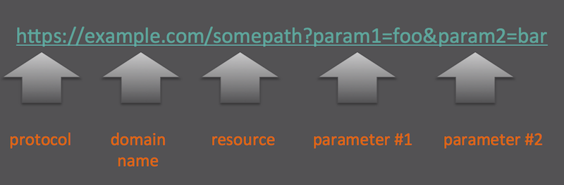

Lab 2 - Introduction ReST
Overview
This lab introduces ReST or Representational State Transfer. ReST was defined by Roy Thomas Fielding in his 2000 PhD dissertation Architectural Styles and the Design of Network-based Software Architectures ReST is just a fancy name for protocol you use everyday in a web browser called HTTP (Hypertext Transfer Protocol).
This section provides the essential background to understand how to use the HTTP protocol with practical exercises using curl command line utility.
The last part of this lab provides a quick overview of the ReST API provided to manipulate:
- Metrics
- Measures
- Events
The HTTP Protocol
A logical starting to talk about the HTTP protocol is to talk about the HTTP request methods.
One of the most prevalent of these HTTP methods is GET which is readily used by a browser
URI
A URI or Uniform Resource Locator is a string of characters used to identify a resource. The most prevalent form of a URI is a URL or Uniform Resource Locator usually called a web address. A notated example of URL is shown here:

- protocol - For the purpose of this lab either: HTTP or HTTPS, though there are others such as FTP.
- domain name - Fully qualified domain name or IP address.
- resource (or path) - Forward slash delimited string uniquely identifying a resource.
- parameter - URL parameter with specific details of a resource.
Headers
Headers accompany both HTTP requests and HTTP responses.
HTTP Request Header
The following are the typical request headers to be encountered for this lab
Authentication
This header contains specific authentication data used by the server determine if you have sufficient privilege to execute the request. Typical types of authentication headers include: Basic, Digest, Challenge-Response. For this lab we will only be using Basic.
Accept
Communicates the clients acceptable contain that it can receive in a response.
Content-Type
Indicates to the server the content type included in the clients request, typical values include:
application/x-www-form-urlencodedapplication/jsonapplication/xml
HTTP Response
The following are the typical response headers to be encountered for this lab.
Content-Type
What is contained ion the body of the HTTP response (text/html, application/json).
Content-Length
Size of the HTTP response body returned to the client.
Status Codes
When HTTP request method (GET, POST, PUT, DELETE) is issued to a endpoint the HTTP protocol accounts
for returning a status code
indicating the result of the request. The Status codes themselves
are classified by the range of their values:
- 2XX - Success - The request was received and processed successfully.
- 3XX - Redirection - The client must must take additional action to complete the request.
- 4XX - Client Error - The clients request has an error of some type and could not be completed.
- 5XX - Server Error - The server failed to fulfil a request
For the sake of this lab, and the APIs to be introduced later, the table shows the relevant HTTP status codes we need to be aware of:
| Status Code | Description |
|---|---|
| 200 OK | Standard response for successfull requests . |
| 201 CREATED | The request has been fulfilled, resulting in the creation of a new resource |
| 202 ACCEPTED | Request has been accepted for processing, but the processing has not been completed. |
| 400 BAD REQUEST | Server is unable to process the client request that is in error. |
| 401 UNAUTHORIZED | Authentication is required but was not provided by the client. |
| 404 NOT FOUND | Request resource could not be found. |
| 422 UNPROCESSABLE ENTITY | Request was well-formed but contains a semantic error. |
| 500 INTERNAL SERVER ERROR | A generic error, ocurrs when unexpected condition was encountered. |
| 503 SERVICE UNAVAILABLE | Server is currently unavailable (overloaded or down for maintenance). |
| 504 GATEWAY TIMEOUT | Server did not receive a timely response from the upstream server. |
JSON
JSON or Java Script Object Notation while not specifically part of HTTP is a prerequisite for the TrueSight Intelligence APIs to be introduced later.
JSON (Not to be confused with Jason Voorhees of the Friday the 13th series) is a:
- Open Standard Format
- Human Readable
The best way to learn JSON is to observe a JSON as shown here:
{
"firstName": "John",
"lastName": "Smith",
"isAlive": true,
"age": 25,
"address": {
"streetAddress": "21 2nd Street",
"city": "New York",
"state": "NY",
"postalCode": "10021-3100"
},
"phoneNumbers": [
{
"type": "home",
"number": "212 555-1234"
},
{
"type": "office",
"number": "646 555-4567"
},
{
"type": "mobile",
"number": "123 456-7890"
}
],
"children": [],
"spouse": null
}
Fields are delineated by double quotes(") and can have data types of numbers, strings, and booleans. Additional array of these same data types can be formed. Object structures are created by enclosing command separate fields between braces ({ and }).
Using curl to make REST calls.
The curl command line utility permits the issuing http(s) request from the command line.
The following are examples of its use, which later be used to call the actual APIs.
Exercise 2-1 GET request
Run the following by cutting or pasting the curl command or run the script: labs/lab-2/ex2-1.rest.sh
curl -X GET -s "https://httpbin.org/get"
You should see output similar to this:
{
"args": {},
"headers": {
"Accept": "*/*",
"Host": "httpbin.org",
"User-Agent": "curl/7.29.0"
},
"origin": "198.147.195.5",
"url": "https://httpbin.org/get"
}
Exercise 2-2 GET request with parameters
Run the following cutting or pasting the curl command or run the script: labs/lab-2/ex2-2.rest.sh
curl -X GET -s "https://httpbin.org/get?foo=bar&color=red"
You should see output similar to this:
{
"args": {
"color": "red",
"foo": "bar"
},
"headers": {
"Accept": "*/*",
"Host": "httpbin.org",
"User-Agent": "curl/7.29.0"
},
"origin": "198.147.195.5",
"url": "https://httpbin.org/get?foo=bar&color=red"
}
In the example above, the parameters are returned in the JSON in the field args.
Exercise 2-3 POST request
Run the following by cutting or pasting the curl command or run the script: labs/lab-2/ex2-3.rest.sh
curl -X POST -s "https://httpbin.org/post"
You should see output similar to this:
{
"args": {},
"data": "",
"files": {},
"form": {},
"headers": {
"Accept": "*/*",
"Host": "httpbin.org",
"User-Agent": "curl/7.29.0"
},
"json": null,
"origin": "198.147.195.5",
"url": "https://httpbin.org/post"
}
Exercise 2-4 POST request with a JSON payload
curl -X POST -s "https://httpbin.org/post" \
-H "Content-Type: application/json" \
-d '{"foo": "bar", "red": true, "curly": 101}'
You should see output similar to this:
{
"args": {},
"data": "{\"foo\": \"bar\", \"red\": true, \"curly\": 101}",
"files": {},
"form": {},
"headers": {
"Accept": "*/*",
"Content-Length": "41",
"Content-Type": "application/json",
"Host": "httpbin.org",
"User-Agent": "curl/7.29.0"
},
"json": {
"curly": 101,
"foo": "bar",
"red": true
},
"origin": "198.147.195.5",
"url": "https://httpbin.org/post"
}
In the example above the JSON payload sent in the request is returned in JSON document as the field data.
Exercise 2-5 PUT request
curl -X PUT -s "https://httpbin.org/put" \
-H "Content-Type: application/json" \
-d '{"foo": "bar", "red": true, "curly": 101}'
You should see output similar to this:
{
"args": {},
"data": "{\"foo\": \"bar\", \"red\": true, \"curly\": 101}",
"files": {},
"form": {},
"headers": {
"Accept": "*/*",
"Content-Length": "41",
"Content-Type": "application/json",
"Host": "httpbin.org",
"User-Agent": "curl/7.29.0"
},
"json": {
"curly": 101,
"foo": "bar",
"red": true
},
"origin": "198.147.195.5",
"url": "https://httpbin.org/put"
}
In the example above the JSON sent in the PUT request is returned in the field data.
Exercise 2-6 DELETE request
curl -X DELETE -s "https://httpbin.org/delete"
You should see output similar to this:
{
"args": {},
"data": "",
"files": {},
"form": {},
"headers": {
"Accept": "*/*",
"Host": "httpbin.org",
"User-Agent": "curl/7.29.0"
},
"json": null,
"origin": "198.147.195.5",
"url": "https://httpbin.org/delete"
}
Exercise 2-7 GET request with authentication
curl -X GET -s -u foo:bar "https://httpbin.org/basic-auth/foo/bar"
You should see output similar to this:
{
"authenticated": true,
"user": "foo"
}
Exercise 2-8 GET request that returns a 400
Status codes and headers are displayed by adding the -i argument to curl.
curl -i -X GET -s "https://httpbin.org/status/400"
You should see output similar to this:
HTTP/1.1 400 BAD REQUEST
Server: nginx
Date: Tue, 12 Apr 2016 20:19:28 GMT
Content-Type: text/html; charset=utf-8
Content-Length: 0
Connection: keep-alive
Access-Control-Allow-Origin: *
Access-Control-Allow-Credentials: true
Exercise 2-9 GET request that returns a 401
curl -i -X GET -u foo:blue "https://httpbin.org/basic-auth/foo/bar"
You should see output similar to this:
HTTP/1.1 401 UNAUTHORIZED
Server: nginx
Date: Tue, 12 Apr 2016 20:23:42 GMT
Content-Length: 0
Connection: keep-alive
Access-Control-Allow-Origin: *
WWW-Authenticate: Basic realm="Fake Realm"
Access-Control-Allow-Credentials: true
Exercise 2-10 GET request that returns a 422
curl -i -X GET "https://httpbin.org/status/422"
You should see output similar to this:
HTTP/1.1 422 UNPROCESSABLE ENTITY
Server: nginx
Date: Tue, 12 Apr 2016 20:21:50 GMT
Content-Type: text/html; charset=utf-8
Content-Length: 0
Connection: keep-alive
Access-Control-Allow-Origin: *
Access-Control-Allow-Credentials: true
TrueSight Intelligence APIs
This section gives a brief introduction to the APIs to be used in the later labs. Specifically in the remainder of the lab you will use the following APIs:
- Metric
- Measurement
- Event
Metrics versus Measures
Metrics are the thing to be measured like CPU or network traffic. A measurement is a specific time series point of a specific metric. For example, the CPU metric defines the collection of the CPU utilization on a host, and measurement is the specific value (e.g 60%) at a given point in time.
Metrics
A metric is uniquely identified by its name. A metric definition consists of the following fields:
- Name - Primary key of the metric
- Display Name - Label used in the Web Interface to represent the metric.
- Display Name Short - Label is used when representing a metric when space in the Web Interface is minimal
- Default Aggregate - Defines the aggregate to be displayed in a graph by default. One of: avg, min, max, sum.
- Default Resolution - Indicator(in milliseconds) of how often measurements can be expected for this metric.
- Unit - Unit of measurement for the metric, which is one of: bytecount, duration, number, percent.
- Type - Used to classify or group like metrics. Typically a device metric, a plugin metric, but can be of any arbitrary string value.
Metric APIs
- Create
- Get
- Update
- Delete
Measurements
Measurements represent the the actual time series data point. A measurement consists of 4 pieces of information:
- metric
- value
- source
- timestamp
Measurement APIs
- Create
- Get
Events
Event API
- Create
- Get
- List Events
- List Raw Events